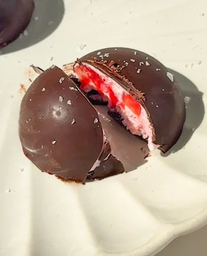

Strawberries and Cream Bites (6 ingredients, no oven)
strawberries and cream is a classic for a reason, and this recipe takes that pairing and turns it into a frozen, no bake dark chocolate bite you're going to want to keep a batch of in your freezer all summer. full disclosure: i originally tested these with white chocolate because i was convinced the dark chocolate would completely ruin the vibe (spoiler alert - it didn't tehe) both versions are great and if you want something that stays truer to the classic strawberries and cream flavour, white chocolate is the one to go for. but i actually prefer these with dark chocolate, the slight bitterness cuts through the sweetness of the strawberry yogurt filling in a way that white chocolate doesn't, and they feel a little more interesting lol. so just know going in that these are inspired by strawberries and cream rather than a straight recreation of it.
traditional strawberries and cream is made with single cream or heavy cream. to recreate that vibe but in a much lighter and healthier way, i developed this recipe with thick greek yogurt. greek yogurt is my preferred choice of dairy product if i am using dairy in a recipe since it has the added boost of healthy bacteria/probiotics and a higher protein content. so you can eat these feeling good that you are also helping your gut microbiome! technically you can substitute the greek yogurt for any other thick yogurt and the recipe will work and be dairy free, however the greek yogurt has the closest flavour to cream.
whenever i am using greek yogurt in baking or no bake treats i love adding in vanilla extract or even better vanilla bean paste whenever i have some on hand. since greek yogurt can be quite bland and sometimes bitter it helps round out the flavour and bring back a touch of sweetness. this is also why we add in the maple syrup, which can be optional depending on your sweet tooth or if you are using a flavoured yogurt.
the strawberry filling is simple but there are a couple of things worth paying attention to. first, taste your strawberries before you mix everything together. strawberries vary a lot in sweetness depending on the season and where you bought them, and a tablespoon of maple syrup is plenty when the strawberries are ripe and sweet. if they're on the tart side you'll want to add more, which is why the recipe gives you flexibility there.
second, there's an optional step where you blend half the yogurt with a tablespoon of the chopped strawberries before mixing it all together. this gives the filling a more even pink colour throughout rather than white yogurt with red strawberry chunks. both versions taste identical but the blended version just looks cuter! so you can completely skip this step for less hassle but if you are a pink lover then you'll appreciate it. on the pink desserts note: check out my strawberry coconut bites for another no bake strawberry dessert that is the prettiest shade of pink!
these strawberry and cream bites are actually based on my mango yogurt bites, which if you haven't tried yet, add them to ur summer no bake dessert list *immediately*. my mango yogurt bites are a staple during heatwaves and since the recipe always goes viral i knew i had to make another version, which is how i landed on strawberries. there is something about how simple and refreshing this dessert is that has you questioning how is it refined sugar free, whole foods and so delicious.
the dark chocolate shell is the same technique as my other chocolate cup/bite recipes: double boiler, coconut oil stirred in before melting for a smooth finish and a bit of shine, a tablespoon into each mold pressed up the sides, then a flash freeze to set before the filling goes in. i use a kettle and a heatproof bowl to do the double boiler rather than a pan on the stove, which i find quicker and easier to control. if you have a pan and a bowl that fits over it, that works exactly the same way. the microwave is also an option but white and dark chocolate both have a tendency to burn in the microwave if you're not careful, so the double boiler is more reliable especially for white chocolate. go in short 20-second bursts and stir between each one if you do use it. the coconut oil goes in with the chocolate and it's what gives you a shell that's smooth rather than thick and dry looking.
the strawberries and "cream" filling goes in once the chocolate shell is almost fully set but not completely rock solid. a slight tackiness after the flash freeze is fine. spoon in a heaped tablespoon of the strawberry yogurt mixture to each mold, smooth the top gently, and back into the freezer. this step takes around an hour for the top of the yogurt to become almost set, but timing will vary depending on your freezer. once it's no longer liquid on top, add the final layer of melted chocolate to seal everything in and freeze for a full four hours or until the yogurt is completely set. i know four hours sounds like a lot but the yogurt needs that time to freeze properly from the centre outward. you can take them out before the 4 hour mark, the yogurt filling will just be less set and still runny instead of the frozen yogurt texture. my only warning is that you might risk taking them out of the freezer too early and the cups will fall apart when removing them from the mold.
once they're fully set, pop them out of the molds gently and store in an airtight container in the freezer. they keep really well for up to a week if you don't eat them all in one sitting (guilty). the frozen yogurt stays thick and creamy rather than turning icy as long as you use a thick greek yogurt to begin with, and the dark chocolate shell stays crisp. let them sit at room temperature for two or three minutes before eating if you want the filling slightly softer, but straight from the freezer on a warm day is so refreshing and just like the frozen yogurt texture we know and love.
if you love this recipe, my mango yogurt bites are an absolute must-make next. same idea but a completely different tropical flavour, and just as easy and refreshing as these.
Frequently Asked Questions
How do I melt the chocolate?
the double boiler method is the most reliable and what i'd always recommend. place a heatproof bowl over a pan/bowl or a kettle of barely simmering water and add the chocolate and coconut oil. stir gently until smooth and fully melted. i personally use a kettle and a bowl, which is quicker and means less to wash up than a pan. the microwave also works but it's easier to overheat and burn the chocolate, especially dark chocolate which can seize quickly. if you do use the microwave, go in 20-second bursts at 50% power and stir between each one. stop as soon as it's almost melted and stir the remaining lumps out using the residual heat.
How long do these strawberries and cream bites take to fully set?
the exact time they take to set will vary depending on how frozen you like them and how cold your freezer is. the chocolate shell needs about 10 minutes to set, the yogurt layer needs roughly an hour to become almost set on top, and then the final chocolate-sealed cups need to be set almost all the way through. overnight is even better and what i'd recommend if you're making these since you don't get tempted to take them out early and you know you have a refreshing sweet treat waiting for you the next day! these are ideal for a heatwave or just to keep in stock in your freezer during summer.
What molds should I use for these strawberries and cream bites?
silicone molds are essential here because the flexibility is what lets you pop the cups out cleanly without cracking the chocolate shell. standard mini silicone cupcake molds or silicone chocolate molds both work really well. avoid rigid moulds or metal tins as the cups will crack when you try to unmold them.
Can I use a different yogurt and make these bites dairy free/vegan?
thick greek yogurt gives the best result because its low moisture content means it freezes into a creamy, set texture rather than turning icy. however, a plant-based thick coconut or soy greek-style yogurt works well as a dairy-free option. just avoid thin or low-fat yogurts as they tend to become icy and watery once frozen rather than giving you that proper strawberries and cream texture.
What is the optional blending step for?
blending half the yogurt with a tablespoon of the chopped strawberries gives the filling a more even, rosy pink colour throughout. without it you get white yogurt with visible red strawberry chunks, which still tastes great but is just slightly less aesthetically pleasing lol. the non-blended version looks more like classic strawberries and cream when you bite into it. both taste identical so it genuinely comes down to whether you want the pretty pink look or not.
Can I omit the maple syrup?
yes, if your strawberries are very ripe and sweet you may not need it at all. taste the yogurt, vanilla and strawberry mixture before filling the molds. if it tastes sweet enough without, leave it out. the maple syrup is there primarily to compensate for tart or out of season strawberries rather than as a core part of the recipe.
Why is my chocolate shell cracking when I remove the cups from the mold?
this usually happens when the cups are removed before they're fully frozen through, which means the yogurt is still slightly soft and puts pressure on the chocolate as it flexes. make sure they are fully set in the freezer before you attempt to unmold them. if cracks still appear, it may also be that the chocolate layer was spread too thin on the sides of the mold. aim for an even, slightly generous coating rather than a thin film.
How do I store these strawberries and cream bites and how long do they keep?
store in an airtight container in the freezer for up to a week. they need to stay in the freezer rather than the fridge because the yogurt filling will soften and lose its set texture at fridge temperature. serve straight from the freezer, or let them sit at room temperature for 2 to 3 minutes to thaw if you prefer the filling a little softer and creamier rather than fully frozen solid.
Pro Tips
- Make sure the chocolate shell is almost fully set before spooning in the yogurt filling - if the chocolate is still liquid it will mix into the yogurt and you'll lose the defined shell.
- Taste the yogurt and strawberry mixture before filling the molds and adjust the maple syrup to your preference.
- Use a thick Greek yogurt only - a thin or runny yogurt will turn icy and grainy once frozen rather than creamy and set.
Strawberries and Cream Bites

Ingredients
Instructions
- Step 1: Melt the dark chocolate and coconut oil together using the double boiler method.
- Step 2: Add approximately 1 tablespoon of melted chocolate to each mold and use the back of a small spoon to push it up the sides until fully coated.
- Step 3: Freeze for around 10 minutes until almost completely set.
- Step 4: Dice the strawberries finely. In a bowl, combine the Greek yogurt and strawberries. Add in the vanilla extract and the maple syrup (optional) and taste, increasing the amount if your strawberries are tart. Mix to combine.
- Step 5: Remove the molds from the freezer, the chocolate should be 90% or completely set.
- Step 6: Spoon a heaped tablespoon of the strawberry yogurt mixture into each chocolate coated mold. Place back in the freezer for around 1 hour until the top of the yogurt is almost set.
- Step 7: Reheat the remaining melted chocolate if needed, then spoon over the top of each cup to seal.
- Step 8: Freeze for a minimum of 4 hours or overnight until completely set.
- Step 9: Gently remove from the molds and enjoy straight from the freezer!
did you make this recipe?
snap a pic & tag @yourwellnessgirly so i can see! i'd love to hear how it went, share ur thoughts and leave a star rating!
Nutrition Facts
Per one serving:
*Nutritional information is estimated and will vary depending on the ingredients and brands you use. Basic macros don't reflect the full nutritional value including vitamins, minerals, antioxidants, and other beneficial compounds. Please use this as a guideline only.
Reviews
Be the first to leave a review
Leave a review
Thanks for your review! It's now live. 💗
No reviews yet — be the first!